Reflections on Building Sustainable Open Toolsand Knowledge for Healthcare
Health Service Modelling Associates Programme, NIHR PenARC, University of Exeter
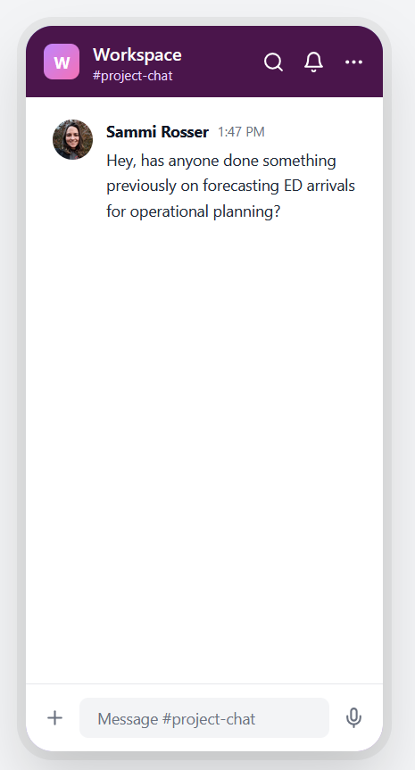
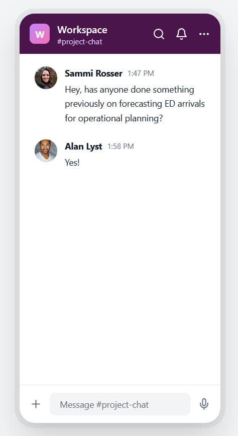
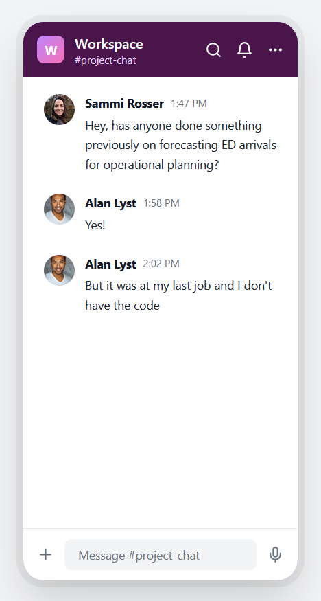
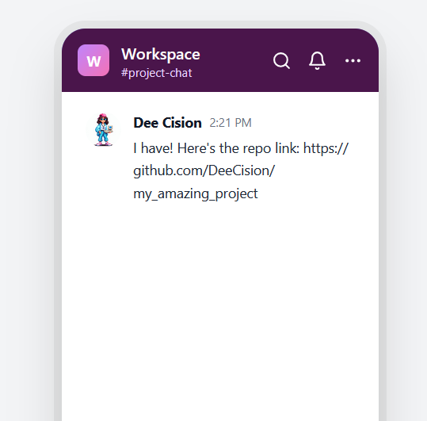
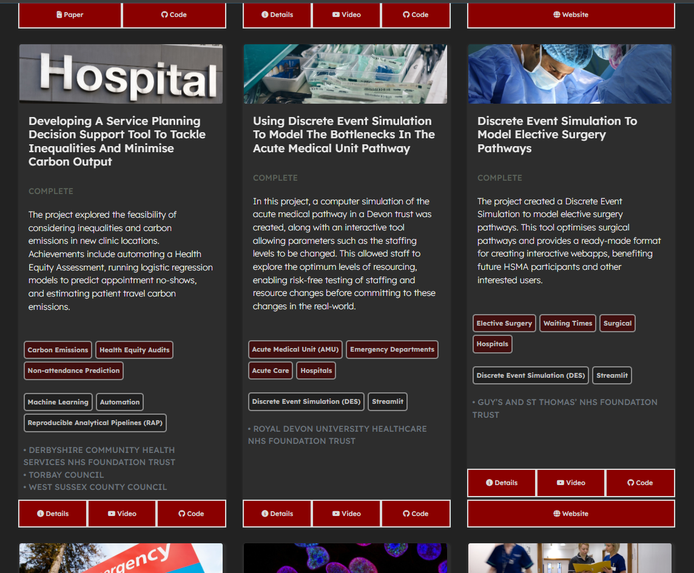
sammirosser.com
If you don’t have a Licence, I can’t reuse your code!
If you don’t have a README, your code will be left on the shelf
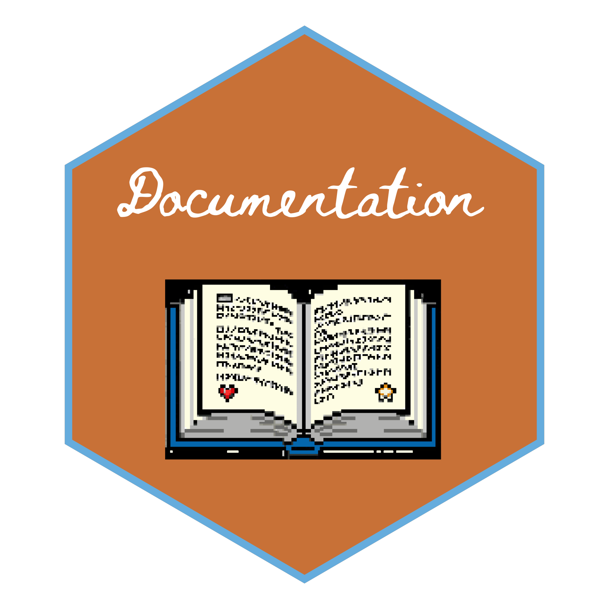
TODO: Add gif of a very long line
Remember our plea from the start?
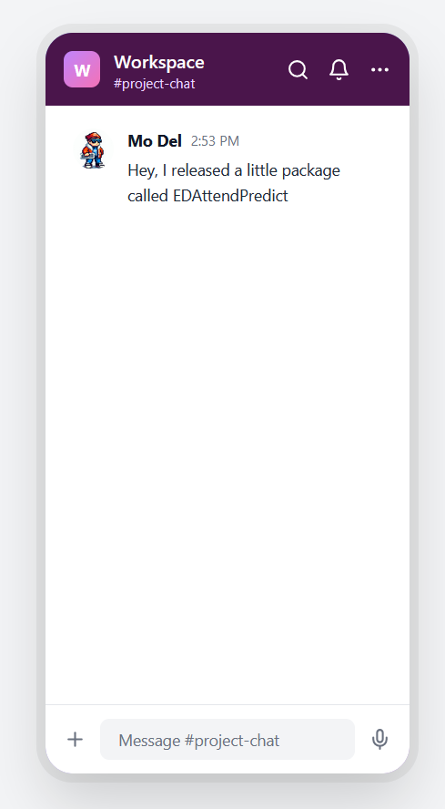
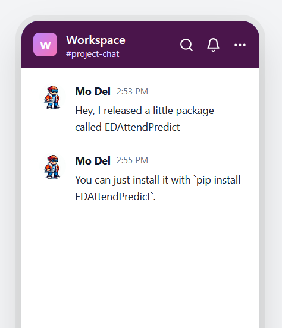
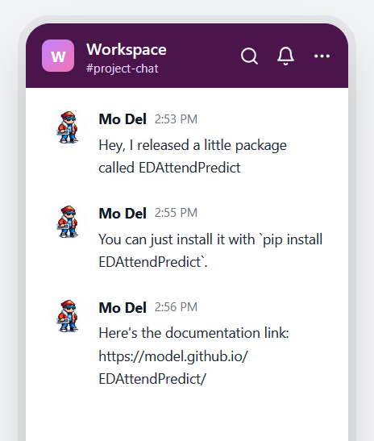
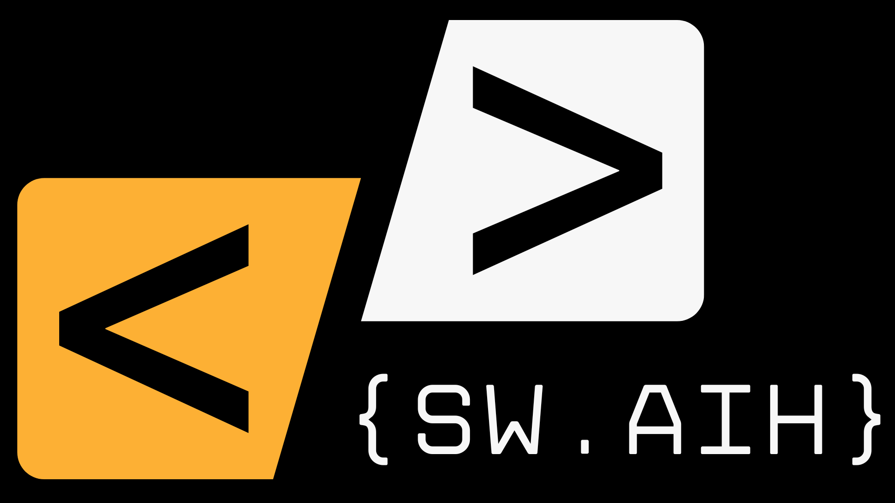
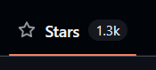
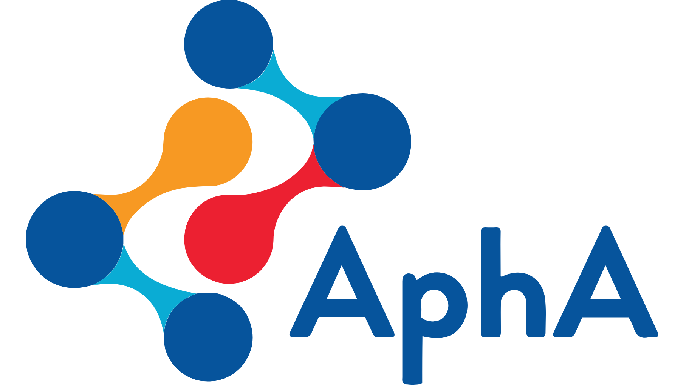
Add Me On LinkedIn - Sammi Rosser
Follow Me On GitHub - Bergam0t
Check out my other talks @ sammirosser.com
Email me - hi@sammirosser.com
Slack chat mockups generated from chatmockup.com
All images and icons generated with DALL-E3 or ChatGPT-5